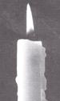

MOTHER'S CHRISTMAS SPECIALS
IT JUST WOULDN'T SEEM LIKE Christmas without candles. And with good reason: Candles have long symbolized the anticipation of the holidays and the keeping of the faith. Candles also remind us that this is a time to remember the past, and what better way than to forgo electricity in favor of the beauty of a homemade candle. And, perhaps best of all, candles make a quick, thoughtful gift (it only takes a second to wrap up a few!).
In addition to being fun, candles are very easy to make at home. You don't need an expensive kit, fancy molds, or even special wicks. You can still make them the way your great-grandmother did-with what you have on hand. Though almost any kind of tallow may be used for candles, beef tallow is the hardest and slowest burning, with an attractive, creamy white color and a clean odor. It's also the cheapest and easiest to obtain-often available free at your local butcher or rendering plant. Just ask if you can have the beef scraps and be willing to pick them up at their convenience.
For supplies, you'll need:
A container for melting scraps into tallow. You'll need one large enough to hold a batch and heavy enough to keep it from burning. A kettle with a pouring spout is handy, and a double-boiler arrangement for the pots is essential for safety. A large, restaurant-size tin can bent on one side to form a spout and placed in a large, deep pan with an inch or two of water is one good, cheap solution.
Cheesecloth for straining.
A long-handled spoon, long enough to reach the bottom of the container. Metal ones are best.
Molds are available in your kitchen or at the town dump.
Wicks. Use cotton string, cord, or whatever you have on hand.
The first step is to make the wick. Twist or braid together any kind of cotton, string, or cord to make a wick thick enough for the candle. Then soak in one of the following:
•Two ounces borax, 1 ounce chloride of lime, 1 ounce chloride of ammonia, and 1 ounce saltpeter, dissolved in 3 quarts of water.
• 1/2 pound lime and 2 ounces saltpeter dissolved in 1 gallon of water.
• Turpentine Soak wicks 15 to 20 minutes; then dry in the sunshine before using.
Render the scraps into tallow by cutting them into small pieces and melting them in a large, heavy pan on the kitchen stove or outdoors over an open fire. Keep the heat low and be patient. If you have a large panful, it may take several hours. Stir once in a while. When the bits of fried fat float to the top of the melted tallow, strain them through a piece of cheesecloth. Now you're ready to mold or dip your candles.
You have two choices with tallow candles: dipping or molding.
First cut the wicks to the proper length and then dip them into melted tallow. After the first dipping, roll the wicks between the fingers to thoroughly incorporate the tallow in the wick, then pull the wick straight and allow it to harden. When hardened, the wicks may be attached to a dipping frame (which allows you to dip several candles at once) made of coat-hanger wire. Tie the wicks about three inches apart on the frame and make sure all the wicks will fit into the container of tallow. Making sure that the tallow is completely melted and warm over a low flame, dip the wicks quickly into the melted tallow. You want to add a layer of tallow each time you dip, yet not melt off the previous layers. It works best if the candle is cold, and some people refrigerate or even freeze them between dippings. When the candles are cold and set, immerse again. Continue this process until the candles are as thick as you like. To store, wrap in tissue.
Candle molds are available at almost any variety store or hobby shop but they are also easy to locate-free of charge-almost everywhere you look. Milk cartons, paper-towel rolls, empty plastic bottles, paper cups, and cracked tumblers can be found on any trash pile, at any city dump or in your own kitchen. All make great, disposable candle molds.
You can use nondisposable molds if you first make them stickproof. There are candle sprays and silicone sprays on the market, and you can also use a skillet spray which is made of fat. Or you can dust the inside of a greased mold with talcum or kitchen powder.
Candles are molded upside down, with the upper part of the mold corresponding to the bottom of the candle and the lower part of the mold becoming the candle top. Therefore, the bottom of the mold must have a small piece of excess wick. Preferably it will extend out of the mold, but this may not always be possible. If not, the extra coiled wick can be pulled out of the candle later.
With molds such as paper cups, loop one end of the wick over a wire suspended across the top of the mold, then thread the other end through a large darning needle and push the needle through the bottom of the mold at the middle of the cup. The wick may also be knotted where it comes out of the lower end of the mold in order to keep it taut.
Melted tallow, just hot enough to be fluid, is poured into the mold until it is filled. Pull the wicks tight and allow the candles to cool.
When cold, the candles will have shrunk in the molds. Refill with warm tallow and cool again.
For more homemade-gift ideas, check out Country Fresh Gifts, from Storey's Country Wisdom Collection (Storey Publishing, Schoolhouse Rd., Pownal, VT 05261).
|
 |
|
|